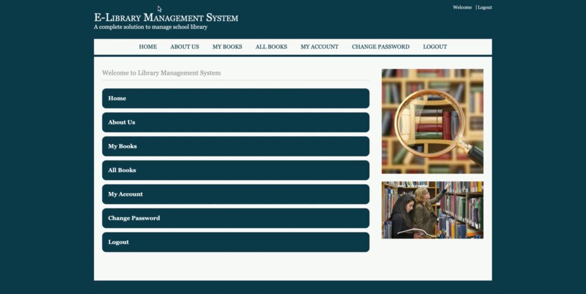

Projects
Hostel Management System
The hostel management system is web based software to provide college students accommodation to the university hostel more efficiently. This project also keeps details of the hostellers and applied students. It is headed by Warden. He will be the administrator. This document is intended to minimize human works and make hostel allocation an easier job for students and hostel authorities by providing online application for hostel, automatically select the students from the waiting list and mess calculation, complaint registration, notice board etc. etc. Students will get approval notification in their mails. Hostellers can view notice board, hostel fee and mess menu by login into the online system.
Technologies used:
This system are developed based on Software Development Life Cycle (SDLC) with PHP and My SQL server. PHP is good for the development and design of web based programs whiles My SQL is good for databases because of its security and its advanced features and properties.
Technology Implemented: Apache Server
Language Used: PHP 5.3 or newer versions
Database: My SQL 5.5 or newer
User Interface: HTML, AJAX
Web Browser: Mozilla, Chrome or Internet Explorer 8(or newer)
Software: XAMPP or WAMP Server
Operating System: Windows XP or higher versions.
UniSZA Dstore System
UniSZA Dstore System is a parcel tracking system which proposed to manage the parcel management between staff and student. The system capable for the staff and student to add the information about the parcel and for the student, they can add the remark regarding their parcel. Via this system, the student will receive the notification regarding their parcel if arrived. The notification deliver is through the system notification. This system was developed by following Adapted Waterfall Model of SDLC. The methodology consists of five phases which are planning process, analysis process, design process, development process, and testing and evaluation process. Functionality testing had been conducted for the user based on the scenario and test cases in order to test on the functionality of the system as well as user evaluation to gauge the feedback on the usability of the system by using usability metrics approach. The overall result of the user evaluation shows that this system is user friendly interface and easy to use.
Technologies used: The coding for this system is done using simple programming languages which include, JavaScript, bootstrap, PHP, Sql, CSS, html and MySQL.
Technology Implemented: Glassfish Server
Language Used: PHP, Javascript,bootstrap, CSS,
Database: My SQL
User Interface: HTML
Web Browser: Chrome, Safari, Mozilla
Software: XAMPP
Operating System: Windows XP

E-Library Management System
E-Library Management System is a project which aims in developing a computerized system to maintain all the daily work of library .This system has many features which are generally not available in normal library management systems like facility of user login and a facility of teachers login . It also has a facility of admin login through which the admin can monitor the whole system .It also has facility of an online notice board where teachers can student can put up information about workshops or seminars being held in our colleges or nearby colleges and librarian after proper verification from the concerned institution organizing the seminar can add it to the notice board . It has also a facility where student after logging in their accounts can see list of books issued and its issue date and return date and also the students can request the librarian to add new books by filling the book request form. The librarian after logging into his account ie admin account can generate various reports such as student report, issue report, teacher report and book report
Technologies used:
FRONT END – HTML
Bootstrap
CSS
HTML
JavaScript
BACK END - PHP
Database - MySQL
